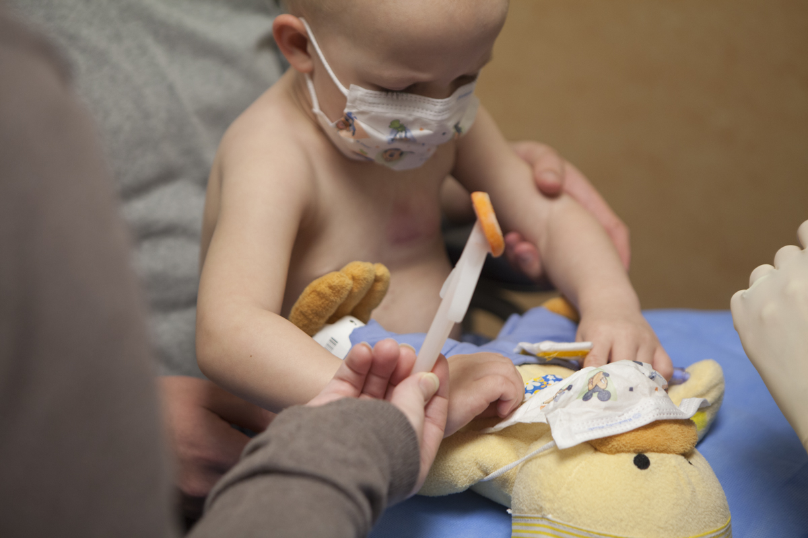
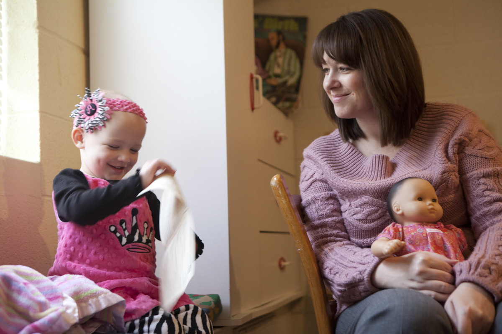
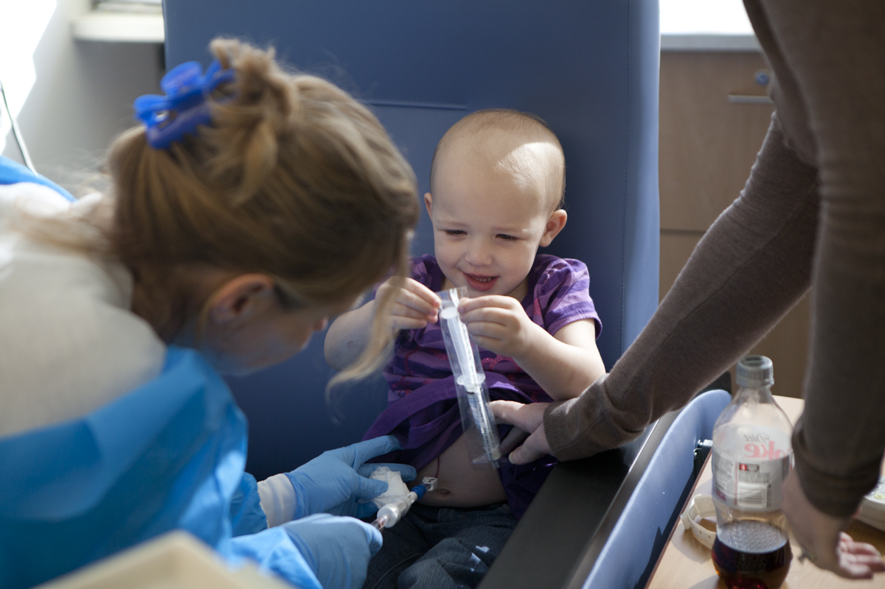
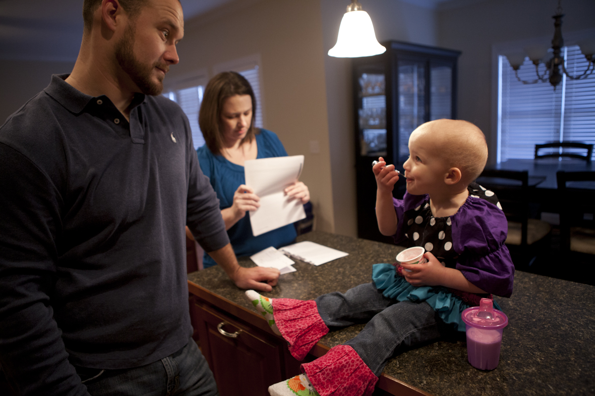
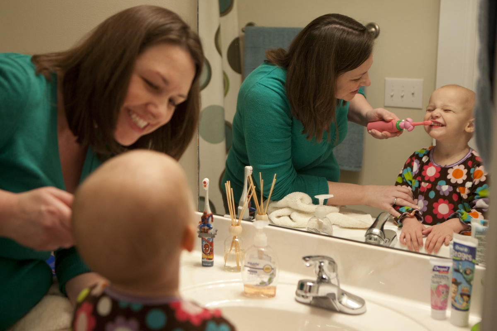

Praying for Alyssa
“Alyssa has a lot of energy, but she wears herself out eventually.” Though she makes it through chemo like a champ and does not currently suffer from nausea and fatigue sometimes associated with the treatment, she does run low on energy at times and will often rest on anything nearby, in this case Amy’s lap.

Alyssa is currently undergoing a 2-year treatment plan for leukemia at the N.C. Cancer Hospital and brings her “Chemo Duck” with her to chemo therapy appointments.. “Chemo Duck” comes with a bag containing a port tube that will velcro to his chest and all of the tools the doctors use so that she can do everything to him that they do to her.

“We could not have made it this far without our faith.” Amy watches Alyssa play with a program for the Sunday service at their church’s nursery. Although she has leukemia, Alyssa is not much different than the average two and a half year old: she loves pink, loves to smile and rarely misses a beat.

Alyssa always finds a way to stay entertained during her time at the pediatric oncology clinic for chemo therapy. Here she takes an unopened syringe from the doctor and tries to remove the packaging while she is being prepped for her chemo dosage.

Alyssa does not always have much of an appetite, so when she is hungry Johnson and Amy try to make sure she finishes her food. Here Johnson watches her have an afternoon snack of yogurt and milk while Amy opens the mail. Often times the food Alyssa will eat depends on what they try to hide her medicine in: she picks up quickly on the taste of the medicine and will shy away from those foods or drinks.

“When she starts on something, she’ll just keep on doing. She can drive around the yard in circles for hours and hours.” Alyssa enjoys driving around her John Deere battery-powered car and will pass times in the evening traveling through the yard with her trusty sidekick, Poo Poo, a doll almost as big as her that she rarely leaves behind.

“Let’s make sure you got all of those teeth.” After bath time, Amy makes sure Alyssa does a sufficient job brushing her teeth before being able to play and head to bed. Alyssa tries to brush her own teeth, but will sometimes end up just laughing with the toothbrush in her mouth, making faces at Amy.